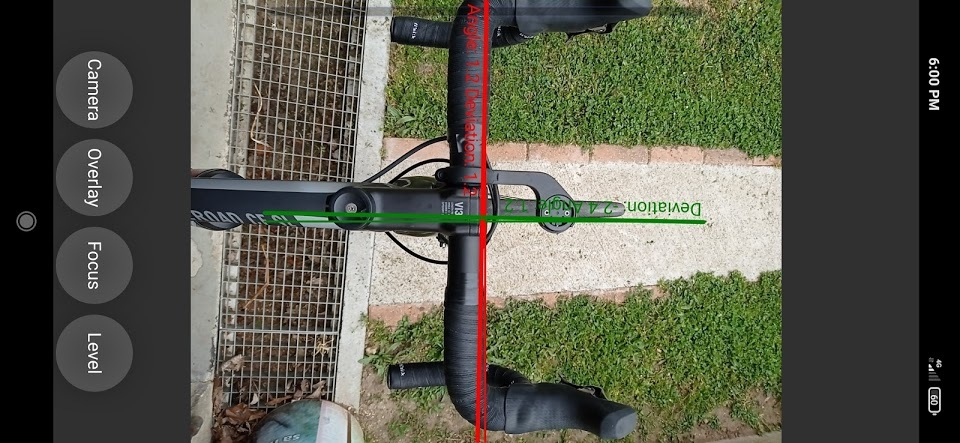

FastTrack

FastTrack is a cross-platform desktop tracking software, easy to install, easy to use, and performant. It can be used with any image quality, any kind of object, and on every computer.
Technology: C++/Qt, OpenCV, GitHub Actions, Hugo, Docusaurus, Doxygen, GoogleTest.
Role: Design, conception, deployment, maintenance, documentation writing.
https://journals.plos.org/ploscompbiol/article?id=10.1371/journal.pcbi.1008697&rev=1OpenJournal

OpenJournal is a simple cross-platform journal, note-taking, and assistant application supporting Markdown syntax and Markdown rendering thanks to qmarkdowntextedit. Write your thoughts, never forget a meeting or simply keep a daily diary. OpenJournal includes a cloud option that allows storing Journals in the cloud developed with Flask and hosted on a webserver.
Technology: C++/Qt, SQLite, GitHub Actions, NSIS, Flask, MariaDB.
Role: Design, conception, deployment, maintenance, server setup and maintenance.
LapsAnalyzer

LapAnalyzer is a tool to analyze race or training laps from FIT file. The software will autodetect laps based on GPS coordinates or manually recorded laps and compare data between laps (cadence, heart rate, power, speed). A graphical summary can be exported to upload to your preferred social network.
Technology: Python/Qt, Pandas, Scipy, ScikitLearn, StatsModels.
Role: Design, conception, deployment, maintenance.
OpticLevel
OpticLevel is a mobile application to align objects easily using the smartphone camera and sensors. For handyman or mechanic, check pole verticality, align handlebar wheel bicycle wheel.
Technology: Qml, Android SDK.
Role: Design, conception, deployment, maintenance.
Ph.D. thesis

Tracking several objects from video recordings is a complicated image processing task but essential in many academic fields. We compiled a database of two-dimensional movies from very different biological and physical systems, spanning a wide range of scales and dynamics, and developed a general-purpose tracking software called FastTrack. It can handle a changing number of deformable objects. We demonstrated that FastTrack is orders of magnitudes faster than state-of-the-art tracking algorithms with comparable tracking accuracy. Chemical perception mediates several essential behaviors in fish, like mating and feeding. However, there is much to understand on how the fish process chemical stimuli. We build two experimental setups. Dual, a high-throughput setup capable of assessing young zebrafish chemical preference, and The Tropical River to simulate realistic flows that fish are susceptible to encounter in nature. Dual is scalable, open-source, and can be built for less than 2 000 euros.
Technology: Computer vision, software design, setup construction, electronic, animal experiment.